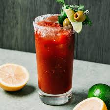
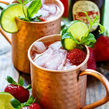

Place the ice in a large jug. Measure the vodka, tomato juice and lemon juice and pour it straight onto the ice
Add 3 shakes of Worcestershire sauce and Tabasco and a pinch or celery salt and pepper
Stir until the outside of the jug feels cold, then strain the cocktail into 2 tall glasses
Top up with fresh ice, add a celery stick garnish both glasses
Place lime wedges and olives on small cocktail sticks and balance on glasses to garnish

Cosmopolitan
Glass:Martini Glass
Ingredients:
45ml lemon vodka
15ml triple sec
30ml cranberry juice
10ml lime juice
ice
Orange zest to garnish
Method:
Shake ingredients with ice and strain into a martini glass
Hold a 3cm round piece of orange zest about 10cm above your cosmo and very carefully wave it over a lighter flame. Bend the outer edge of the zest in towards the flame so that the orange oils are released. Drop the zest into the drink
Moscow Mule
Glass:Copper Mug
Ingredients:
50ml vodka
Crushed ice
150ml ginger beer
Few dashes of ginger bitters
Sprig of mint
Wedge of lime
Method:
Pour the vodka into a copper mug and load up 3/4 full with crushed ice
Fill to the top with ginger beer and stir gently to combine
Add a few dashes of ginger bitters
Serve with a sprig of mint to garnish and the lime to squeeze over
Also works well garnished with berries

Espresso Martini
Glass:Martini glass
Ingredients:
50g Golden caster sugar
Ice
50ml Vodka
25ml freshly brewed espresso coffee
25ml coffee liquer
3 coffee beans
Method:
To make the sugar syrup, put the caster sugar in a pan over a medium heat and bring to the boil. Stir constantly
Turn off the heat and allow the syrup to cool
Pour 1 tbsp sugar syrup into a cocktail shaker with a handful of ice, the vodka, espresso and coffee liquer
Shake until the outside of the shaker is cold
Strain into a martini glass and garnish with coffee beans